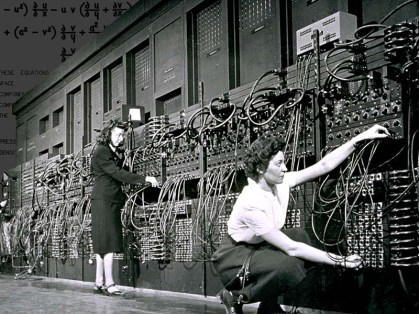
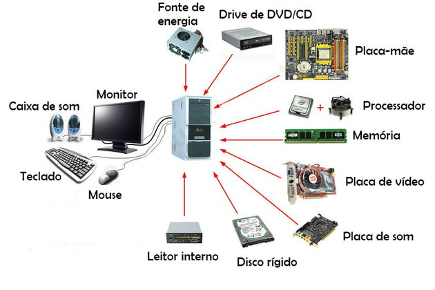
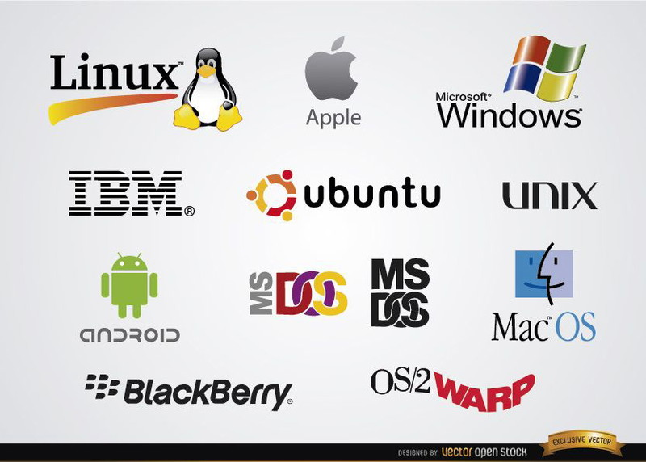
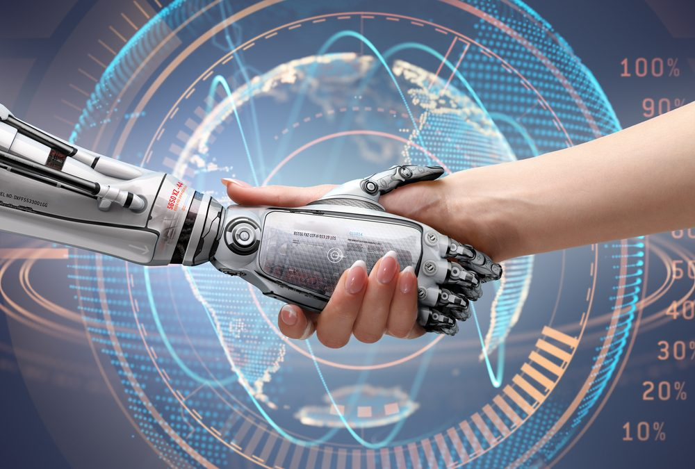

O que é a Informática ?
A informática é o campo do conhecimento que envolve o estudo, o desenvolvimento e a utilização de computadores e tecnologias relacionadas para o processamento de informações. A introdução à informática aborda os conceitos básicos necessários para o entendimento do funcionamento dos sistemas computacionais e seu uso no cotidiano.
Evolução da Informática
A informática evoluiu rapidamente ao longo das últimas décadas, com o aumento do poder de processamento dos computadores, a miniaturização de dispositivos e o desenvolvimento de novas tecnologias como a computação em nuvem, inteligência artificial e big data.
A importância da Informática
A informática tem impacto direto em praticamente todas as áreas da sociedade, desde a educação, saúde, indústria, até a comunicação, entretenimento e comércio. Compreender os conceitos básicos de informática tornou-se essencial para o bom desempenho no mercado de trabalho e na vida cotidiana
História da Informática
A história da informática está repleta de inovações e descobertas que transformaram a forma como processamos e armazenamos informações. Ao longo dos séculos, a humanidade desenvolveu ferramentas e tecnologias que evoluíram para os computadores modernos que conhecemos hoje.
1.Primeiros passos: O surgimento da contagem e cauculos
Antes do surgimento dos computadores eletrônicos, a necessidade de realizar cálculos complexos já era uma preocupação antiga. Ferramentas como o ábaco, criado por volta de 2300 a.C., foram uma das primeiras tentativas de automatizar a contagem e processamento de dados.
Máquinas de Cálculo Mecânica: Século XXVI e XVIII
Blaise Pascal (1642): Inventou a Pascalina, uma das primeiras calculadoras mecânicas, para facilitar cálculos de números.
Gottfried Wilhelm Leibniz (1673): Criou a Máquina de Leibniz, um dispositivo que permitia realizar operações matemáticas mais complexas como multiplicação e divisão
Primeiros computadores(Década 1940 á 1950)
Os primeiros computadores eram gigantescos e pouco práticos. O ENIAC (Electronic Numerical Integrator and Computer), desenvolvido nos EUA em 1945, é considerado um dos primeiros computadores eletrônicos de propósito geral. Ele pesava mais de 27 toneladas e ocupava uma sala inteira. Esses computadores eram baseados em válvulas eletrônicas e eram extremamente lentos, com capacidades limitadas.
Computadores de grande escala (Década 1960 á 1970)
Nos anos 60, os computadores começaram a ficar mais poderosos e a se expandir para setores como o militar, o governamental e o empresarial. O IBM 360, lançado em 1964, foi um marco importante. Ele era mais versátil e confiável, e ajudou a popularizar o uso de computadores nas empresas. Nessa fase, surgiram também os primeiros sistemas operacionais e linguagens de programação.
Computadores pessoais (Década 1980)
Na década de 80, a revolução dos computadores pessoais começou a tomar forma com a introdução do IBM PC e do Apple II. Essas máquinas eram menores, mais acessíveis e podiam ser usadas por pessoas em casa ou em pequenas empresas. O sistema operacional MS-DOS, da Microsoft, e depois o Windows, se tornaram predominantes, enquanto a interface gráfica do Macintosh trouxe uma nova abordagem para o uso de computadores.
Computadores portáteis (Década 1990)
Nos anos 90, surgiram os primeiros laptops, mais compactos e com maior capacidade de processamento. A popularização da internet também influenciou a evolução, levando ao desenvolvimento de navegadores como o Netscape Navigator e sistemas de comunicação como o MSN Messenger.
Smartphones(início dos anos 2000 até aos nossos dias)
Com o avanço da miniaturização e a invenção de novos chips, os smartphones se tornaram os computadores mais acessíveis e populares da história. Em 2007, o iPhone da Apple revolucionou a forma como as pessoas interagem com a tecnologia, combinando funcionalidades de um celular com as de um computador pessoal. Hoje, os smartphones possuem potências de processamento superiores aos primeiros supercomputadores e são fundamentais para o cotidiano, com capacidades de navegação na internet, apps, redes sociais, e até mesmo inteligência artificial.

Componentes de um computador

Um computador é formado por hardware (parte física) e software (parte lógica). Os principais componentes de hardware são:
- CPU(Processador):é o “cérebro” do computador, responsável por executar cálculos e comandos.
- Memória RAM:armazena dados temporariamente enquanto os programas estão em uso.
- Armazenamento (HD ou SSD): guarda dados de forma permanente, como ficheiros e programas
- Placa-mãe: conecta e permite a comunicação entre todos os componentes.
- Dispositivos de entrada: teclado, rato, scanner, etc
- Dispositivos de saída: monitor, impressora, colunas, etc.
Sistemas Operativos

O sistema operativo é o software principal do computador. Ele controla o hardware e permite a interação do utilizador com a máquina. As suas funções principais são:
- Gerir a memória e o processador
- Controlar dispositivos (teclado, monitor, impressora)
- Permitir a execução de programas
Exemplos de sistemas operativos são Windows, Linux, macOS, Android e iOS.
Aplicações da Informática na Vida Real
A informática está presente em quase todas as áreas da sociedade, como:
- Educação: aulas online, plataformas digitais, pesquisas.
- Saúde: exames médicos, prontuários eletrónicos, cirurgias assistidas por computador.
- Comunicação: redes sociais, e-mails, videochamadas.
- Comércio: lojas online, pagamentos digitais, sistemas de gestão.
- Transporte: GPS, controlo de tráfego, carros inteligentes.
Programação: o Coração da Informática
A programação é o processo de criar instruções (código) que dizem ao computador o que fazer. É considerada o coração da informática porque permite criar softwares, aplicações, jogos e sistemas.
Por meio de linguagens como Python, Java, C++ e JavaScript, os programadores resolvem problemas, automatizam tarefas e desenvolvem tecnologias inovadoras. Sem programação, os computadores seriam apenas máquinas sem utilidade prática.

Informática na Sociedade

A informática desempenha um papel fundamental na sociedade moderna, influenciando a forma como as pessoas vivem, trabalham e comunicam. Ela facilita o acesso à informação, melhora a comunicação através da internet e das redes sociais, e aumenta a eficiência em áreas como educação, saúde, comércio e indústria. Além disso, a informática impulsiona a inovação tecnológica e cria novas oportunidades de emprego, tornando-se essencial para o desenvolvimento social e económico da sociedade atual.
